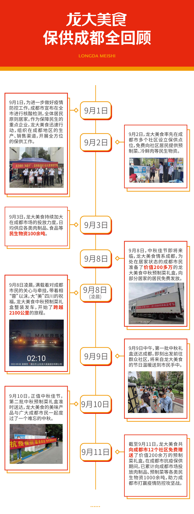
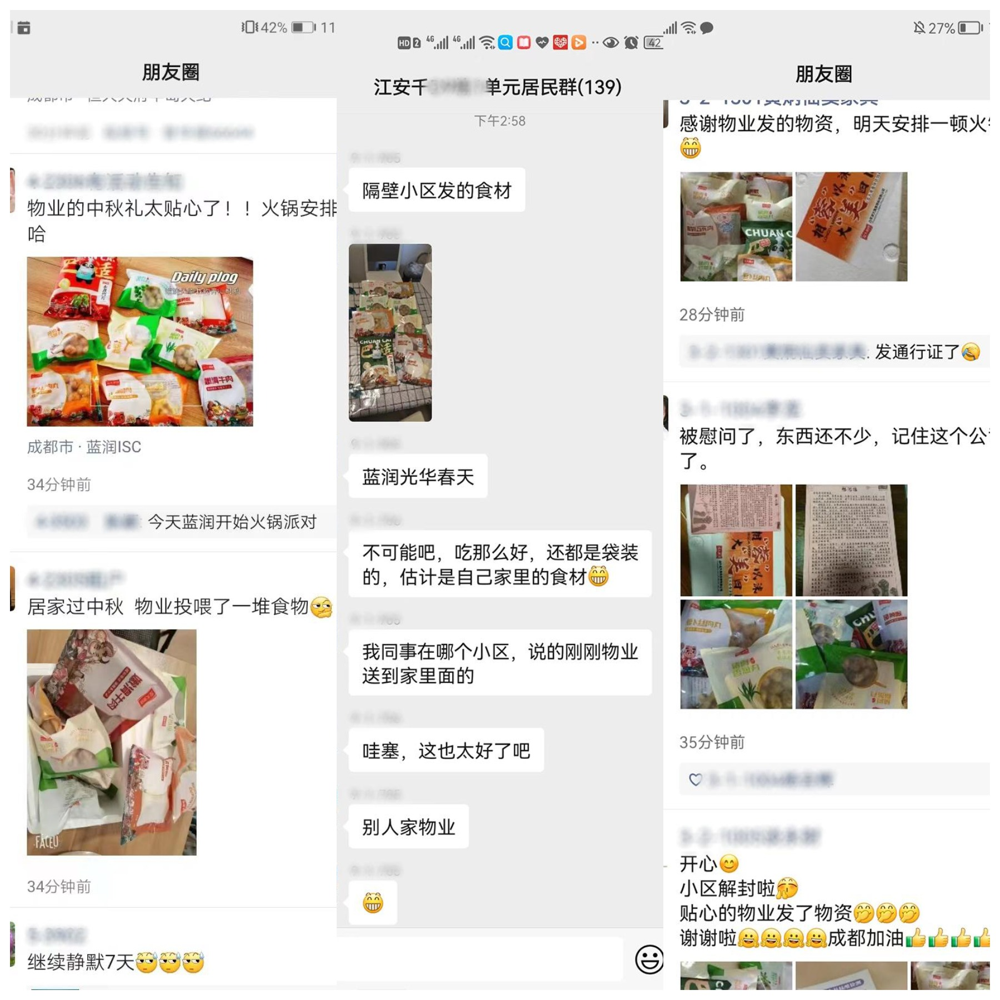
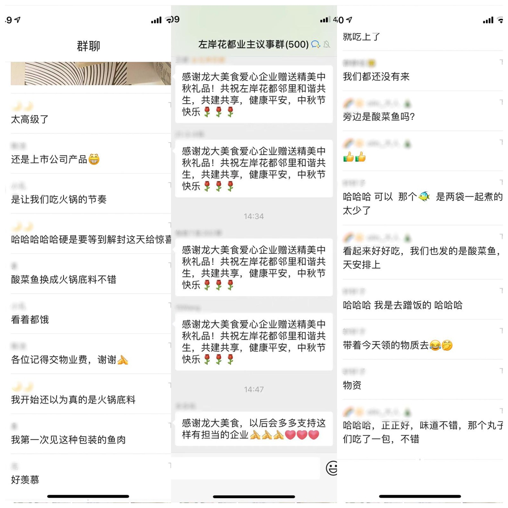
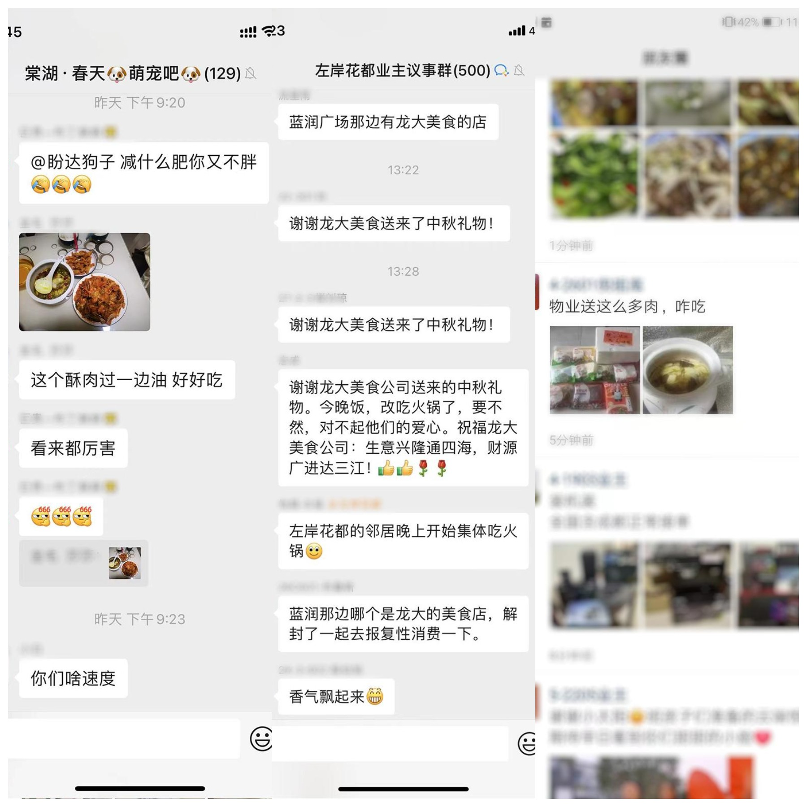
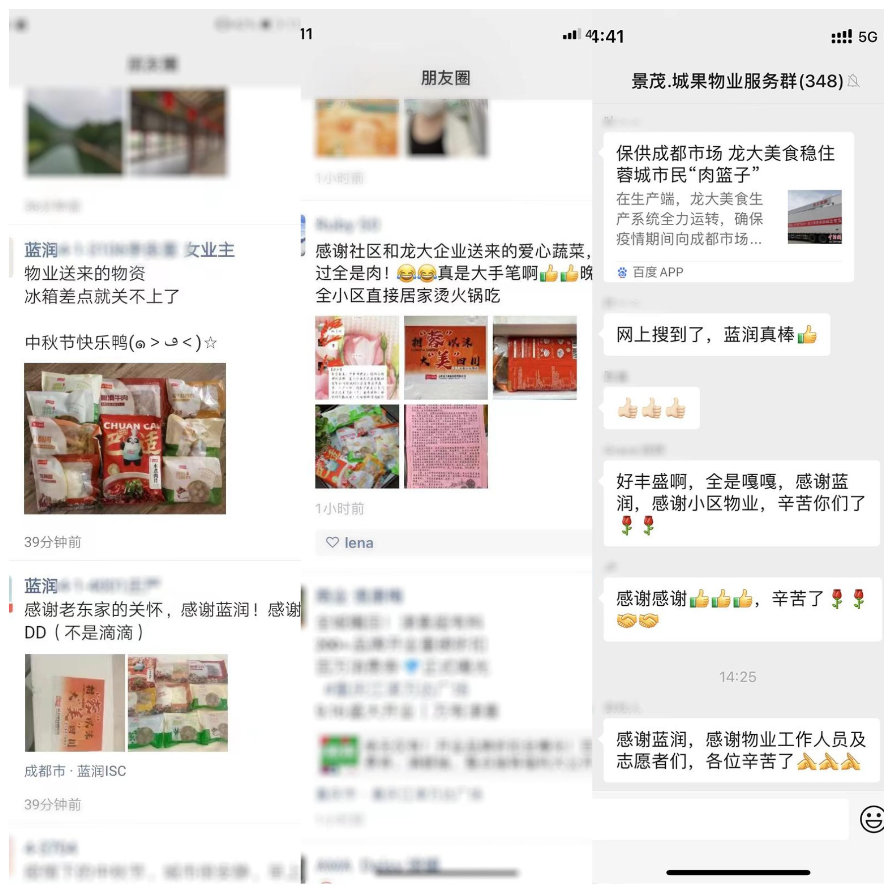

公司新闻
发布时间：2022-09-29新闻来源：
龙大美食保供成都全回顾，200多万元预制菜免费赠送彰显社会责任
群众点赞爱心企业
“这是要让小区里在中秋节飘满火锅的味道！”这是成都一位社区居民在收到预制菜礼盒后发的朋友圈，此次免费赠送的中秋预制菜礼盒里，龙大美食根据成都市民的饮食习惯及口味偏好，精心选择了水煮丸子、小酥肉、萝卜丝肉丸、水煮系列、黄喉、精制五花肉等产品。社区居民收到礼盒后也纷纷在群聊与朋友圈中晒起了美食。
   在社交平台中，许多成都市民也发文为龙大美食的爱心之举点赞，有网友发文评论到：“山东人就是这么实在，这一箱扎实的很！”与此同时，新闻媒体也对龙大美食的爱心之举进行了广泛关注，成都广播电视台在专题节目中对龙大美食免费赠送中秋礼盒的工作进行了报道，全国多家媒体也进行了跟踪报道。
在社交平台中，许多成都市民也发文为龙大美食的爱心之举点赞，有网友发文评论到：“山东人就是这么实在，这一箱扎实的很！”与此同时，新闻媒体也对龙大美食的爱心之举进行了广泛关注，成都广播电视台在专题节目中对龙大美食免费赠送中秋礼盒的工作进行了报道，全国多家媒体也进行了跟踪报道。
除预制菜产品外，龙大美食还向多个社区投放了冷鲜肉、冻品等多种产品，丰富多样的产品种类以及充足的产品供应量受到了广大社区居民的欢迎与喜爱，对保障社区物资供应稳定及居民日常生活做出了重要贡献。
多项措施保障供应
自成都疫情防控以来，龙大美食充分发动在西南地区的生产及销售资源，全力以赴保障物资供应及价格稳定。
在生产方面，龙大美食生产系统全力运转，确保疫情防控期间急需的食品、预制菜、肉制品等民生产品不断档。同时，针对成都当地的商超、农贸市场等合作客户，龙大美食在严格保障食品安全的同时，通过科学分配产能及物流通道，加大预制菜、冷鲜肉、熟食调理品等产品优先供应。
与此同时，龙大美食坚持以普惠为基础保供应、稳物价，各线下商超网点积极与政府机关联动，价格实行明码标价，坚决杜绝在物资供应关键时期无序涨价的行为，确保所有消费者能买到实惠肉、安心肉。
作为民生企业，龙大美食将继续响应国家号召，积极和成都市各级部门保持紧密沟通，落实物资保供工作。未来，龙大美食将在防疫政策许可范围内，持续加大渠道备货、丰富重点保供产品种类，为打赢疫情防控攻坚战提供坚实有力的保障。